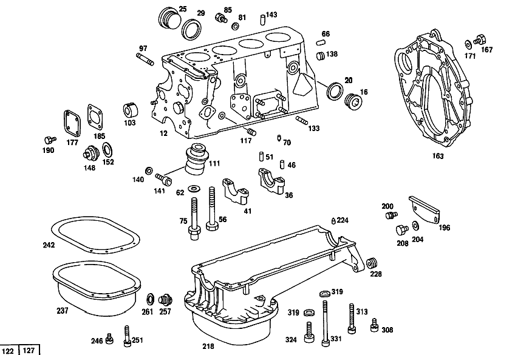

| № | Артикул | Название | Кол. | Примечание | Ограничение |
|---|---|---|---|---|---|
| 12 | A 115 010 83 08 | БЛОК ЦИЛИНДРОВ | 1 | ||
| 16 | N 000908 030002 | - Резьбовая пробка | 4 | ЗАГЛУШКА БОКОВЫХ ЛИТЫХ ОТВЕРСТИЙ | |
| 20 | N 007603 030100 | - Уплотнительное кольцо | 4 | ЗАГЛУШКА БОКОВЫХ ЛИТЫХ ОТВЕРСТИЙ | |
| 25 | N 000908 038004 | - Резьбовая пробка | 3 | ЗАГЛУШКА БОКОВЫХ ЛИТЫХ ОТВЕРСТИЙ | |
| 25 | N 000908 038004 | - Резьбовая пробка | 1 | ||
| 29 | A 094 990 10 08 | - Уплотнительное кольцо | 3 | ЗАГЛУШКА БОКОВЫХ ЛИТЫХ ОТВЕРСТИЙ | |
| 36 | A 615 011 02 13 | - КРЫШКА ПОДШ. КОЛЕНВАЛА | 1 | [402] БОЛЬШЕ НЕ ПОСТАВЛЯЕТСЯ | |
| 41 | A 615 011 02 11 | - КРЫШКА ПОДШ. КОЛЕНВАЛА | 4 | ||
| 46 | N 000007 010102 | - Цилиндрический штифт | 5 | ||
| 51 | N 000007 008101 | - Цилиндрический штифт | 5 | ||
| 56 | N 000931 012061 | - Винт | 9 | ||
| 62 | A 121 990 28 40 | - Диск | 10 | ||
| 66 | A 180 991 01 60 | - Штифт | 2 | ||
| 70 | A 186 991 00 55 | - Стопорный штифт | 1 | ||
| 75 | A 615 011 01 71 | - болт | 1 | ||
| 81 | A 636 997 02 44 | - Уплотнительное кольцо | 1 | СЛИВ ВОДЫ | |
| 85 | N 007604 014106 | - Резьбовая пробка | - | ||
| 85 | A 094 990 16 08 | - Резьбовая пробка | 1 | СЛИВ ВОДЫ | |
| 89 | A 094 990 01 06 | - Резьбовая пробка | 1 | [402] БОЛЬШЕ НЕ ПОСТАВЛЯЕТСЯ | |
| 91 | N 000443 034002 | - Запорная крышка | 1 | ЗАГЛУШКА ЛИТ. ОТВЕРСТИЯ, СТОРОНА СЦЕПЛ. | |
| 97 | N 000939 010047 | - Винт | 4 | КРОНШТ. КЛИМАТ.УСТАН. НА БЛОКЕ ЦИЛ. | |
| 103 | A 110 052 01 06 | - Втулка подшипника | 1 | ВАЛ ПРОМЕЖУТ.ШЕСТЕРНИ СЗАДИ | |
| 111 | A 115 150 05 07 | - КОРПУС ПОДШИПНИКА | 1 | ||
| 117 | N 915014 006101 | - Стопор | 1 | СМ. РИСУНОК № 140 СМ. РИСУНОК № 141 [402] БОЛЬШЕ НЕ ПОСТАВЛЯЕТСЯ | |
| 133 | N 000939 010011 | - Шпилька | 4 | КРОНШТЕЙН ОПОРЫ ДВИГАТЕЛЯ НА БЛОКЕ ЦИЛИНДРОВ | |
| 138 | A 000 990 47 12 | - БОЛТ | 2 | ЗАГЛУШКА СМАЗОЧНОГО КАНАЛА СЗАДИ | |
| 140 | N 000433 008406 | Шайба | 1 | ОПОРА ПРЕРЫВАТЕЛЯ\-РАСПРЕДЕЛИТЕЛЯ ЗАЖИГАНИЯ НА БЛОКЕ ЦИЛИНДРОВ | |
| 141 | N 000912 008223 | Цилиндрич. винт | 1 | ОПОРА ПРЕРЫВАТЕЛЯ\-РАСПРЕДЕЛИТЕЛЯ ЗАЖИГАНИЯ НА БЛОКЕ ЦИЛИНДРОВ | |
| 143 | N 000007 010100 | Цилиндрический штифт | 2 | ||
| 148 | A 130 180 00 56 | Резьбовая пробка | 1 | КЛАПАН ИЗБЫТ. ДАВЛ. МАСЛА | |
| 152 | A 094 990 01 08 | Уплотнительное кольцо | 1 | КЛАПАН ИЗБЫТ. ДАВЛ. МАСЛА | |
| 163 | A 115 011 15 45 | ФЛАНЕЦ | - | [152] ИСПОЛЬЗОВАТЬ СТАРЫЙ НОМЕР ДЕТАЛИ ДО ДВИГАТЕЛЯ 938 10/50,20/60 104710 938 12/52,22/62 024876 939 10/50,20/60 012167 939 12/52,22/62 000636 952 10/50,20/60 004869 952 12/52,22/62 000283 954 10/50,20/60 134369 954 12/52,22/62 069489 955 007502 970 000654 972 011361 973 10/50,20/60 002234 | |
| 163 | A 615 011 02 45 | Промежуточный фланец | 1 | ||
| 167 | N 000933 010164 | Винт | 4 | ||
| 171 | N 000125 010518 | Шайба | - | ||
| 171 | N 000125 010532 | Шайба | 4 | ||
| 181 | A 115 011 00 33 | КРЫШКА | 1 | [141] НЕ ДЛЯ ШАССИ 123.083 | |
| 185 | A 115 011 00 80 | ПРОКЛАДКА УПЛОТНИТЕЛЬНАЯ | 1 | [141] НЕ ДЛЯ ШАССИ 123.083 | |
| 190 | N 000933 006103 | Винт | - | ||
| 190 | N 304017 006018 | Винт с 6-гранной головкой | 4 | M6X12 [141] НЕ ДЛЯ ШАССИ 123.083 | |
| 196 | A 111 250 04 56 | ЗАЩИТНАЯ ПАНЕЛЬ | - | [152] ИСПОЛЬЗОВАТЬ СТАРЫЙ НОМЕР ДЕТАЛИ ДО ДВИГАТЕЛЯ 938 10/50,20/60 104710 938 12/52,22/62 024876 939 10/50,20/60 012167 939 12/52,22/62 000636 952 10/50,20/60 004869 952 12/52,22/62 000283 954 10/50,20/60 134369 954 12/52,22/62 069489 955 007502 970 000654 972 011361 973 10/50,20/60 002234 | |
| 196 | A 615 250 51 56 | Щиток | 1 | ||
| 200 | N 000933 006103 | Винт | - | Коробка передач | |
| 200 | N 304017 006018 | Винт с 6-гранной головкой | 1 | M6X12 Коробка передач | |
| 200 | N 304017 006018 | Винт с 6-гранной головкой | 2 | M6X12 Автоматическая коробка переключения передач | |
| 200 | N 304017 006018 | Винт с 6-гранной головкой | 2 | M6X12 | |
| 204 | N 000137 010201 | Пружинная шайба | 1 | Коробка передач | |
| 208 | N 000933 010111 | Винт | 1 | Коробка передач | |
| 218 | A 115 010 18 13 | МАСЛЯНЫЙ КАРТЕР | - | ||
| 218 | A 115 010 17 13 | МАСЛЯНЫЙ КАРТЕР | - | ||
| 218 | A 115 010 18 13 | МАСЛЯНЫЙ КАРТЕР | 1 | ||
| 224 | A 186 991 00 55 | - Стопорный штифт | 1 | ||
| 228 | N 900195 010109 | - Резьбовая вставка | 2 | ||
| 237 | A 115 010 04 28 | - Поддон масляный | 1 | ||
| 242 | A 115 014 01 22 | - ПРОКЛАДКА УПЛОТНИТЕЛЬНАЯ | - | ||
| 242 | A 616 014 01 22 | - Уплотнительная прокладка | 1 | ||
| 246 | N 914020 006000 | - Винт с неспадающей шайбой | 14 | [065] 954 НЕ ДЕЙСТВИТЕЛЬНО ПРИ ШАССИ 123.043 | |
| 251 | N 914020 006006 | - Винт с неспадающей шайбой | 3 | ||
| 257 | A 130 997 00 32 | - болт | 1 | ||
| 261 | N 915035 000025 | - Уплотнительное кольцо | 1 | ||
| 266 | A 615 018 05 40 | ДЕРЖАТЕЛЬ | - | ||
| 266 | A 615 018 06 40 | ДЕРЖАТЕЛЬ | 1 | [402] БОЛЬШЕ НЕ ПОСТАВЛЯЕТСЯ | |
| 294 | A 115 018 12 16 | НАПРАВЛ. ТРУБКА | 1 | ||
| 308 | N 914020 006000 | Винт с неспадающей шайбой | 14 | МАСЛ.КАРТЕР К БЛОКУ ЦИЛ. ДВИГ. | |
| 313 | N 914034 006001 | Винт с неспадающей шайбой | 2 | МАСЛ.КАРТЕР К БЛОКУ ЦИЛ. ДВИГ. | |
| 319 | N 000137 008204 | Пружинная шайба | 4 | МАСЛ.КАРТЕР К БЛОКУ ЦИЛ. ДВИГ. | |
| 324 | N 000912 008203 | Цилиндрич. винт | 2 | МАСЛ.КАРТЕР К БЛОКУ ЦИЛ. ДВИГ.; M8X30\-10.9 | |
| 331 | N 000912 008056 | Винт | 2 | МАСЛ.КАРТЕР К БЛОКУ ЦИЛ. ДВИГ. | |
| 348 | A 833 997 02 81 | втулка | 1 | ||
| 354 | A 615 010 11 72 | Маслоизмерительный щуп | 1 | ||
| 363 | A 011 997 53 45 | - Уплотнительное кольцо | 1 | ||
| 408 | A 115 053 02 31 | - КОЛЬЦО СЕДЛА КЛАПАНА | 4 | НОРМАЛЬН.,ВПУСК | |
| 412 | A 121 053 05 32 | - КОЛЬЦО СЕДЛА КЛАПАНА | - | [171] СТАРЫЙ НОМЕР ДЕТАЛИ ИСПОЛЬЗ. ДЛЯ А/М БЕЗ КАТАЛИЗАТОРА | |
| 412 | A 115 053 08 32 | - КОЛЬЦО СЕДЛА КЛАПАНА | 4 | НОРМАЛЬН.,ВЫПУСК 42.1 MM | |
| 412 | A 115 053 10 32 | - КОЛЬЦО СЕДЛА КЛАПАНА | 4 | ВЫПУСК, РЕМОНТ. ИСПОЛНЕНИЕ 43.3 MM | |
| 417 | A 114 997 01 30 | - ЗАГЛУШКА РЕЗЬБОВАЯ | 2 | ЛИТЫЕ ОТВЕРСТИЯ | |
| 422 | N 000939 008006 | - Шпилька | 3 | ОПОРА РАСПРЕДВАЛА НА ГБЦ | |
| 426 | N 000007 008202 | - Цилиндрический штифт | 6 | ОПОРА РАСПРЕДВАЛА НА ГБЦ | |
| 431 | A 121 016 10 60 | - РАСПРЕДЕЛИТЕЛЬ ВОДЫ | 2 | ||
| 439 | A 121 016 08 60 | - РАСПРЕДЕЛИТЕЛЬ ВОДЫ | 4 | ||
| 448 | N 000835 010112 | - Винт | 3 | ВСАСЫВ.КОЛЛЕКТОР И ВЫПУСК.КОЛЛЕКТОР НА ГБЦ | |
| 448 | N 000835 010112 | - Винт | 4 | Рулевое управление: Вправо | |
| 448 | N 000835 010112 | - Винт | 4 | Рулевое управление: Влево | |
| 453 | N 000835 010067 | - Винт | 2 | ВСАСЫВ.КОЛЛЕКТОР И ВЫПУСК.КОЛЛЕКТОР НА ГБЦ | |
| 453 | N 000835 010067 | - Винт | 1 | Рулевое управление: Вправо | |
| 453 | N 000835 010067 | - Винт | 1 | Рулевое управление: Влево | |
| 457 | N 000939 008116 | - Винт | 2 | РЕГУЛЯТОР ОХЛАЖД.ЖИДКОСТИ К ГОЛОВКЕ БЛОКА ЦИЛИНДРОВ | |
| 461 | A 094 990 54 06 | - Винт | 2 | НАТЯЖИТ. ЦЕПИ НА ГБЦ | |
| 466 | A 130 050 00 24 | - НАПРАВЛЯЮЩАЯ КЛАПАНА | - | ||
| 466 | A 130 050 01 24 | - Направляющая клапана | - | ВПУСК [133] БОЛЬШЕ НЕ ПОСТАВЛ., ДЛЯ ЭТОГО 130 050 01 24 [004] 14.014-14.021 MM,14.019-14.026 MM , 14.025-14.032 MM | |
| 472 | A 108 050 05 24 | - НАПРАВЛЯЮЩАЯ КЛАПАНА | - | ||
| 472 | A 108 050 06 24 | - Направляющая клапана | - | ВЫПУСК [134] БОЛЬШЕ НЕ ПОСТАВЛ., ДЛЯ ЭТОГО 108 050 06 24 [006] 15.014-15.021MM,15.019-15.026 MM,15.025-15.032 MM РЕМОНТНОЕ ИСПОЛНЕНИЕ | |
| 476 | N 009045 014000 | - Пруж. стопорное кольцо | 4 | ||
| 504 | A 115 586 07 05 | РЕМКОМПЛЕКТ | 1 | НОРМАЛЬНО | |
| 520 | N 000433 008406 | Шайба | 3 | ОПОРА РАСПРЕДВАЛА НА ГБЦ | |
| 524 | N 000934 008013 | Гайка | 3 | ОПОРА РАСПРЕДВАЛА НА ГБЦ | |
| 531 | A 115 016 31 20 | ПРОКЛАДКА ГБЦ | - | ||
| 531 | A 115 016 32 20 | ПРОКЛАДКА ГБЦ | - | ||
| 531 | A 115 016 37 20 | Прокладка ГБЦ | 1 | ||
| 531 | A 115 016 36 20 | ПРОКЛАДКА ГБЦ | - | ||
| 531 | A 115 016 39 20 | ПРОКЛАДКА ГБЦ | 1 | ||
| 536 | N 914020 008007 | Винт с неспадающей шайбой | 2 | ||
| 540 | N 000912 012029 | Винт | 4 | ||
| 547 | N 000433 008406 | Шайба | 1 | ||
| 552 | N 000912 012040 | Винт | - | ||
| 552 | A 615 990 03 12 | болт | 6 | ||
| 556 | N 000912 010037 | Цилиндрич. винт | 4 | ||
| 560 | N 000433 010505 | Шайба | 4 | ||
| 564 | N 000912 012029 | Винт | 4 | ||
| 569 | A 110 016 04 76 | Диск | 10 | ||
| 574 | A 115 180 04 27 | МАСЛОПРОВОД | 1 | ||
| 578 | A 115 187 00 84 | ВКЛАДКА | 1 | [402] БОЛЬШЕ НЕ ПОСТАВЛЯЕТСЯ | |
| 582 | N 914020 006000 | Винт с неспадающей шайбой | 1 | ||
| 582 | N 914020 006009 | Винт с неспадающей шайбой | - | ||
| 582 | N 000000 000009 | Винт с неспадающей шайбой | 1 | ||
| 588 | A 130 995 00 20 | ХОМУТ | 2 | ||
| 592 | N 000933 004030 | Винт | 2 | ||
| 596 | N 000137 004202 | Пружинная шайба | 2 | ||
| 609 | A 115 010 07 30 | КРЫШКА ГБЦ | 1 | ||
| 613 | A 000 018 07 02 | Крышка наливной горловины | - | [415] ПРИМЕЧ. ПО ЗАМЕНЕ ПРИМЕНИМО ТОЛЬКО ДЛЯ СТОЯЩИХ РЯДОМ ПОЗИЦИЙ | |
| 613 | A 102 018 04 02 | Крышка наливной горловины | - | ||
| 613 | A 102 018 08 02 | Крышка | - | ||
| 613 | A 111 018 03 02 | Крышка наливной горловины | 1 | ПРОБКА ЗАПРАВОЧНОГО ОТВЕРСТИЯ [402] БОЛЬШЕ НЕ ПОСТАВЛЯЕТСЯ | |
| 617 | A 000 018 01 80 | - ПРОКЛАДКА УПЛОТНИТЕЛЬНАЯ | - | [415] ПРИМЕЧ. ПО ЗАМЕНЕ ПРИМЕНИМО ТОЛЬКО ДЛЯ СТОЯЩИХ РЯДОМ ПОЗИЦИЙ | |
| 617 | A 102 018 00 80 | - ПРОКЛАДКА УПЛОТНИТЕЛЬНАЯ | - | ||
| 617 | A 102 018 03 80 | - Уплотнительная прокладка | - | 38.5X59 MM; TO 102 018 08 02 | |
| 617 | A 111 018 00 80 | - Уплотнительная прокладка | 1 | 47.5X59 MM; TO 111 018 03 02 | |
| 623 | A 115 016 01 80 | ПРОКЛАДКА УПЛОТНИТЕЛЬНАЯ | 1 | ||
| 629 | A 115 990 63 40 | Диск | 4 | КРЫШКА КЛАПАННОГО МЕХАНИЗМА К ГОЛОВКЕ БЛОКЕ ЦИЛИНДРОВ | |
| 633 | N 000125 008418 | Шайба | - | ||
| 633 | N 000125 008443 | Шайба | 4 | КРЫШКА КЛАПАННОГО МЕХАНИЗМА К ГОЛОВКЕ БЛОКЕ ЦИЛИНДРОВ; 8 MM | |
| 637 | A 115 016 00 74 | БОЛТ | 4 | КРЫШКА КЛАПАННОГО МЕХАНИЗМА К ГОЛОВКЕ БЛОКЕ ЦИЛИНДРОВ | |
| 641 | N 000934 008013 | Гайка | 4 | КРЫШКА КЛАПАННОГО МЕХАНИЗМА К ГОЛОВКЕ БЛОКЕ ЦИЛИНДРОВ | |
| 646 | A 094 990 92 07 | Уплотнительное кольцо | 1 | ||
| 650 | A 615 997 00 72 | ШТУЦЕР | 1 | [402] БОЛЬШЕ НЕ ПОСТАВЛЯЕТСЯ | |
| A 115 010 22 02 | МОТОР | - | Рулевое управление: ВлевоКоробка передач [401] ИСПОЛЬЗОВАТЬ СТАРЫЙ НОМЕР ДЕТАЛИ | ||
| A 115 010 42 02 | МОТОР | 1 | Рулевое управление: ВлевоКоробка передач [015] +ЗАКАЗАТЬ:1X 000 184 45 08,1X 115 180 03 27 ДО ДВИГ. 951 10/50 017224 951 12/52 010344 | ||
| A 115 010 23 02 | МОТОР | - | Рулевое управление: ВлевоАвтоматическая коробка переключения передач [401] ИСПОЛЬЗОВАТЬ СТАРЫЙ НОМЕР ДЕТАЛИ | ||
| A 115 010 44 02 | МОТОР | 1 | Рулевое управление: ВлевоАвтоматическая коробка переключения передач [697] ДЕТАЛЬ ПОСТАВЛЯЕТСЯ ТОЛЬКО/ИЛИ ТАКЖЕ КАК ЗАП.ЧАСТЬ [015] +ЗАКАЗАТЬ:1X 000 184 45 08,1X 115 180 03 27 ДО ДВИГ. 951 10/50 017224 951 12/52 010344 | ||
| A 115 010 17 02 | МОТОР | 1 | Рулевое управление: ВправоКоробка передач | ||
| A 115 010 54 44 | МОТОР | 1 | Рулевое управление: ВправоАвтоматическая коробка переключения передач | ||
| A 115 010 17 50 | ШОРТБЛОК | 1 | Коробка передач | ||
| A 115 010 19 50 | ШОРТБЛОК | 1 | ДЛЯ США,ШВЕЦИИ И НИЗКОЙ СТЕПЕНИ СЖАТИЯ Коробка передач [172] НАЧИНАЯ С ДВИГАТЕЛЯ 951 035138 ШВЕЦИЯ | ||
| A 115 010 18 50 | ШОРТБЛОК | 1 | Автоматическая коробка переключения передач | ||
| A 115 010 20 50 | ШОРТБЛОК | 1 | ДЛЯ США,ШВЕЦИИ И НИЗКОЙ СТЕПЕНИ СЖАТИЯ Автоматическая коробка переключения передач [175] НАЧИНАЯ С ДВИГАТЕЛЯ 951 020746 ШВЕЦИЯ | ||
| A 115 010 50 08 | БЛОК ЦИЛИНДРОВ | - | [401] ИСПОЛЬЗОВАТЬ СТАРЫЙ НОМЕР ДЕТАЛИ | ||
| N 000443 034002 | - Запорная крышка | 6 | ЗАГЛУШКА БОКОВЫХ ЛИТЫХ ОТВЕРСТИЙ | ||
| A 615 010 04 23 | - КРЫШКА ПОДШИПНИКА | - | |||
| A 615 010 05 23 | - КРЫШКА ПОДШИПНИКА | - | |||
| A 121 011 00 71 | - БОЛТ | - | [401] ИСПОЛЬЗОВАТЬ СТАРЫЙ НОМЕР ДЕТАЛИ | ||
| N 000908 030002 | - Резьбовая пробка | 1 | ЗАГЛУШКА ЛИТ. ОТВЕРСТИЯ, СТОРОНА СЦЕПЛ. | ||
| N 007603 030100 | - Уплотнительное кольцо | 1 | ЗАГЛУШКА ЛИТ. ОТВЕРСТИЯ, СТОРОНА СЦЕПЛ. | ||
| A 180 052 10 06 | - ПОДШИПНИК | - | |||
| N 000939 008078 | - Винт | 2 | МАСЛ.КАРТЕР К БЛОКУ ЦИЛ. ДВИГ. | ||
| N 000939 010029 | - Шпилька | 2 | КРОНШТЕЙН ОПОРЫ ДВИГАТЕЛЯ НА БЛОКЕ ЦИЛИНДРОВ | ||
| N 000939 010027 | - Шпилька | 2 | КРОНШТЕЙН ОПОРЫ ДВИГАТЕЛЯ НА БЛОКЕ ЦИЛИНДРОВ | ||
| A 094 990 49 07 | - Шар | 2 | ЗАГЛУШКА СМАЗОЧНОГО КАНАЛА СЗАДИ | ||
| N 000906 018000 | Резьбовая пробка | 1 | МАСЛ.КАНАЛ ВПЕРЕДИ | ||
| A 127 184 01 56 | ЗАГЛУШКА РЕЗЬБОВАЯ | - | |||
| A 115 586 19 90 | КОМПЛЕКТ УПЛОТНЕНИЙ | - | |||
| A 115 586 21 90 | КОМПЛЕКТ УПЛОТНЕНИЙ | - | |||
| A 115 586 24 90 | КОМПЛЕКТ УПЛОТНЕНИЙ | - | |||
| A 115 586 23 90 | КОМПЛЕКТ УПЛОТНЕНИЙ | - | |||
| A 115 010 08 80 | КОМПЛЕКТ УПЛОТНЕНИЙ | - | |||
| A 115 010 20 05 | БЛОК ЦИЛИНДРОВ | 1 | БЛОК ЦИЛИНДРОВ ДВИГАТЕЛЯ | ||
| A 115 011 08 45 | ФЛАНЕЦ | - | [401] ИСПОЛЬЗОВАТЬ СТАРЫЙ НОМЕР ДЕТАЛИ | ||
| A 115 010 16 13 | МАСЛЯНЫЙ КАРТЕР | - | |||
| A 115 010 03 28 | - МАСЛЯНЫЙ КАРТЕР | - | |||
| A 136 997 12 30 | - ЗАГЛУШКА РЕЗЬБОВАЯ | - | |||
| N 007604 012102 | - Резьбовая пробка | - | [401] ИСПОЛЬЗОВАТЬ СТАРЫЙ НОМЕР ДЕТАЛИ [415] ПРИМЕЧ. ПО ЗАМЕНЕ ПРИМЕНИМО ТОЛЬКО ДЛЯ СТОЯЩИХ РЯДОМ ПОЗИЦИЙ | ||
| A 123 997 01 30 | - ЗАГЛУШКА РЕЗЬБОВАЯ | - | |||
| A 123 997 04 30 | - ЗАГЛУШКА РЕЗЬБОВАЯ | - | |||
| A 002 997 34 30 | - Резьбовая пробка | 1 | |||
| N 007603 012110 | - Уплотнительное кольцо | 1 | |||
| A 115 018 07 16 | НАПРАВЛ. ТРУБКА | - | |||
| A 115 018 09 16 | НАПРАВЛ. ТРУБКА | - | |||
| N 914020 006006 | Винт с неспадающей шайбой | 2 | МАСЛ.КАРТЕР К БЛОКУ ЦИЛ. ДВИГ. | ||
| N 000939 008078 | Винт | 2 | МАСЛ.КАРТЕР НА БЛОКЕ ЦИЛ.,СПЕРЕДИ | ||
| N 000934 008013 | Гайка | 2 | МАСЛ.КАРТЕР НА БЛОКЕ ЦИЛ.,СПЕРЕДИ | ||
| A 115 010 66 20 | ГОЛОВКА БЛОКА ЦИЛИНДРОВ | - | |||
| A 115 010 28 21 | ГОЛОВКА БЛОКА ЦИЛИНДРОВ | 1 | |||
| A 115 053 04 31 | - КОЛЬЦО СЕДЛА КЛАПАНА | 4 | ВПУСК 49,3 MM | ||
| A 121 053 06 32 | - КОЛЬЦО СЕДЛА КЛАПАНА | - | [171] СТАРЫЙ НОМЕР ДЕТАЛИ ИСПОЛЬЗ. ДЛЯ А/М БЕЗ КАТАЛИЗАТОРА | ||
| N 000908 024008 | - Резьбовая пробка | 2 | ЛИТЫЕ ОТВЕРСТИЯ | ||
| N 000908 022010 | - Резьбовая пробка | 2 | ЛИТЫЕ ОТВЕРСТИЯ | ||
| A 094 990 01 08 | - Уплотнительное кольцо | 2 | ЛИТЫЕ ОТВЕРСТИЯ | ||
| A 094 990 96 07 | - Уплотнительное кольцо | 2 | ЛИТЫЕ ОТВЕРСТИЯ | ||
| N 000835 010066 | - Винт | 1 | ВСАСЫВ.КОЛЛЕКТОР И ВЫПУСК.КОЛЛЕКТОР НА ГБЦ | ||
| A 130 050 01 24 | - Направляющая клапана | 4 | ВПУСК [005] 14.043-14.050 MM РЕМОНТНОЕ ИСПОЛНЕНИЕ | ||
| A 130 050 02 24 | - Направляющая клапана | 4 | РЕМОНТ.ИСПОЛНЕНИЕ;ВПУСК 14.20 MM | ||
| A 130 050 03 24 | - Направляющая клапана | 4 | РЕМОНТ.ИСПОЛНЕНИЕ;ВПУСК 14.40 MM | ||
| N 009045 014000 | - Пруж. стопорное кольцо | 4 | |||
| A 108 050 06 24 | - Направляющая клапана | 4 | ВЫПУСК [007] 15.043-15.050 MM MM РЕМОНТНОЕ ИСПОЛНЕНИЕ | ||
| A 108 050 07 24 | - Направляющая клапана | 4 | РЕМОНТ.ИСПОЛНЕНИЕ;ВЫПУСК 15.20 MM | ||
| A 108 050 08 24 | - Направляющая клапана | 4 | РЕМОНТ.ИСПОЛНЕНИЕ;ВЫПУСК 15,40 MM | ||
| A 002 989 93 71 | Резьбовой фиксатор | 1 | УПЛОТНЕНИЕ УСТАНОВОЧНЫХ ШТИФТОВ | ||
| A 115 586 20 90 | КОМПЛЕКТ УПЛОТНЕНИЙ | - | |||
| A 115 586 22 90 | КОМПЛЕКТ УПЛОТНЕНИЙ | - | |||
| A 115 586 25 90 | КОМПЛЕКТ УПЛОТНЕНИЙ | - | ГОЛОВКА БЛОКА ЦИЛИНДРОВ [147] НЕ УСТАНАВЛ. ДЛЯ ЭТОГО 115 586 28 90 | ||
| A 115 586 26 90 | КОМПЛЕКТ УПЛОТНЕНИЙ | - | ГОЛОВКА БЛОКА ЦИЛИНДРОВ [146] НЕ УСТАНАВЛ. ДЛЯ ЭТОГО 115 586 29 90 | ||
| A 115 586 28 90 | КОМПЛЕКТ УПЛОТНЕНИЙ | - | [144] ИСПОЛЬЗОВАТЬ СТАРЫЙ НОМЕР ДЕТАЛИ ДО ДВИГАТЕЛЯ 952 10/50,20/60 003958 952 12/52,22/62 000212 954 10/50,20/60 098332 954 12/52,22/62 051697 955 005792 958 000061 970 000581 972 007920 973 10/50,20/60 000145 | ||
| A 115 586 29 90 | КОМПЛЕКТ УПЛОТНЕНИЙ | - | [144] ИСПОЛЬЗОВАТЬ СТАРЫЙ НОМЕР ДЕТАЛИ ДО ДВИГАТЕЛЯ 952 10/50,20/60 003958 952 12/52,22/62 000212 954 10/50,20/60 098332 954 12/52,22/62 051697 955 005792 958 000061 970 000581 972 007920 973 10/50,20/60 000145 | ||
| A 115 586 34 90 | КОМПЛЕКТ УПЛОТНЕНИЙ | - | |||
| A 115 010 00 80 | КОМПЛЕКТ УПЛОТНЕНИЙ | - | |||
| A 115 010 38 21 | К-т упл. ГБЦ | 1 | ГОЛОВКА БЛОКА ЦИЛИНДРОВ | ||
| A 115 586 04 05 | РЕМКОМПЛЕКТ | - | [401] ИСПОЛЬЗОВАТЬ СТАРЫЙ НОМЕР ДЕТАЛИ | ||
| A 115 051 00 10 | - ПОДШИПНИК РАСПРЕДВАЛА | 1 | [016] ПО ОТДЕЛЬНОСТИ НЕ ПОСТАВЛЯЕТСЯ | ||
| A 115 051 05 12 | - ПОДШИПНИК РАСПРЕДВАЛА | 2 | [016] ПО ОТДЕЛЬНОСТИ НЕ ПОСТАВЛЯЕТСЯ | ||
| A 115 586 05 05 | РЕМКОМПЛЕКТ | - | [401] ИСПОЛЬЗОВАТЬ СТАРЫЙ НОМЕР ДЕТАЛИ | ||
| A 115 586 08 05 | РЕМКОМПЛЕКТ | 1 | ПРОМЕЖУТОЧН.ГРУППА, ШИРИНА МЕНЬШЕ НА 0,1 MM | ||
| A 115 051 01 10 | - ПОДШИПНИК РАСПРЕДВАЛА | 1 | [016] ПО ОТДЕЛЬНОСТИ НЕ ПОСТАВЛЯЕТСЯ | ||
| A 115 051 06 12 | - ПОДШИПНИК РАСПРЕДВАЛА | 2 | [016] ПО ОТДЕЛЬНОСТИ НЕ ПОСТАВЛЯЕТСЯ | ||
| A 115 586 06 05 | РЕМКОМПЛЕКТ | - | |||
| A 115 586 09 05 | РЕМКОМПЛЕКТ | 1 | РЕМОНТ.ГРУППА I; ШИРИНА МЕНЬШЕ НА 0,25 MM | ||
| A 115 051 02 10 | - ПОДШИПНИК РАСПРЕДВАЛА | 1 | [016] ПО ОТДЕЛЬНОСТИ НЕ ПОСТАВЛЯЕТСЯ | ||
| A 115 051 07 12 | - ПОДШИПНИК РАСПРЕДВАЛА | 2 | [016] ПО ОТДЕЛЬНОСТИ НЕ ПОСТАВЛЯЕТСЯ | ||
| A 115 016 16 20 | ПРОКЛАДКА ГБЦ | - | |||
| A 115 016 20 20 | ПРОКЛАДКА ГБЦ | - | |||
| A 115 016 24 20 | ПРОКЛАДКА ГБЦ | - | [144] ИСПОЛЬЗОВАТЬ СТАРЫЙ НОМЕР ДЕТАЛИ ДО ДВИГАТЕЛЯ 952 10/50,20/60 003958 952 12/52,22/62 000212 954 10/50,20/60 098332 954 12/52,22/62 051697 955 005792 958 000061 970 000581 972 007920 973 10/50,20/60 000145 | ||
| A 115 016 18 20 | ПРОКЛАДКА ГБЦ | - | |||
| A 115 016 22 20 | ПРОКЛАДКА ГБЦ | - | [144] ИСПОЛЬЗОВАТЬ СТАРЫЙ НОМЕР ДЕТАЛИ ДО ДВИГАТЕЛЯ 952 10/50,20/60 003958 952 12/52,22/62 000212 954 10/50,20/60 098332 954 12/52,22/62 051697 955 005792 958 000061 970 000581 972 007920 973 10/50,20/60 000145 | ||
| N 000912 008098 | Цилиндрич. винт | 1 | |||
| N 000912 008223 | Цилиндрич. винт | 1 | |||
| N 000912 012039 | Винт | 6 | |||
| A 130 990 01 40 | ШАЙБА | - | |||
| A 186 990 09 40 | ШАЙБА | - | |||
| A 110 016 03 76 | ШАЙБА | - | |||
| A 115 180 02 27 | МАСЛОПРОВОД | - | |||
| A 102 018 03 02 | Крышка | - | [414] СТАРУЮ ДЕТАЛЬ УСТАНАВЛИВАТЬ БОЛЬШЕ НЕ РАЗРЕШАЕТСЯ | ||
| N 000939 008079 | Винт | 4 | КРЫШКА КЛАПАННОГО МЕХАНИЗМА К ГОЛОВКЕ БЛОКЕ ЦИЛИНДРОВ |
Позиций: 230 · подписано на схемах: 135 · колесо — плавный зум в курсор, перетаскивание — пан, двойной клик — зум, клик по артикулу — скопировать · наведите на строку или цифру на схеме — подсветка связки, клик — закрепить.